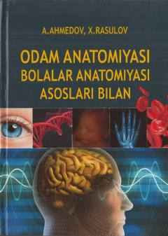

OATibbiyot talabalari uchun odam va bolalar anatomiyasi bo'yicha mukammal darslik.
Ushbu darslik tibbiyot institutlari talabalari uchun mo'ljallangan bo'lib, odam anatomiyasi va bolalar anatomiyasining asoslarini qamrab oladi. Kitobda kattalar organizmining tuzilishi bilan bir qatorda, bolalik davridagi yoshga xos anatomik o'zgarishlar va a'zolar rivojlanishi batafsil yoritilgan.